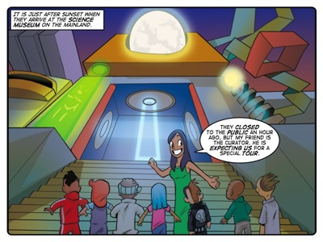

Story: The Philosopher's Stone
Theme: Scientific ideas.
Synopsis
Tia asks a friend at the Science Museum to organise a special after-hours tour for her students. When they enter the museum, the kids are ushered away by a man claiming to be an assistant to the curator. Meanwhile Tia is whisked away to meet her friend. But she soon finds out that her friend has been taken hostage and that the man taking the kids for a tour is merely trying to distract them.
The kidnappers want Tia and her friend to follow a recipe to make the Philosopher's Stone, using ingredients found in the museum. Meanwhile, Klaus leads the kids around the museum and imparts his distinctly unscientific knowledge about scientific ideas. The kids are sceptical. They recognise the unscientific character of the things he is saying. And they recognise the facts that dispute his assertions about scientific principles and phenomena. When they have had enough of his mystical ranting they engineer a clever escape, using their knowledge of science against him. Meanwhile, Tia and her friend do likewise by causing their recipe to literally blow up in the faces of their kidnappers.
This story offers a comparison of two fundamentally different lenses through which to view the world: science and mysticism. The Thunderbolt Kids represent and utilise scientific models of reasoning in their approach to Klaus’ lesson and the threat that Klaus's mystical worldview represents. Klaus's character is, of course, a caricature. His mysticism is over the top but lots of people share the broad strokes of his haphazard approach to the empirical sciences. Klaus may have made an excellent tour guide in a museum dedicated to displaying the great fallacies of mysticism, but he’s dreadfully out of context here.
This story explores the nature of ideas, with the focus on ideas that are scientific. By pitting their wits against Klaus and the kidnappers, The Thunderbolt Kids and Tia introduce learners to the notion that some ideas are scientific in nature – backed up by empirical evidence – and some are not.
Activity
This activity challenges learners to identify the abstract ideas that connect other ideas that are more concrete. On the activity sheet are four lists of nouns. At the top of each list is a cloud. We ask learners to choose one idea from a box of ideas that logically connects the nouns in the list and to write it in the cloud.
The purpose of the activity is to show learners the interconnectivity of different ideas. In this case there is more than one answer for each of the lists of nouns. But through discussion learners will have to decide which idea they believe most logically connects all the nouns in the list.
In doing this activity we want learners to recognise that a single idea can denote a number of different sub-ideas. In this way the exercise lays the foundation for more complicated conceptual thinking exercises.
In this project learners use an onscreen joystick to control a magnet object, which they use to pick up a car. The purpose of the project is to provide an opportunity for trial-and-error experimentation within eToys. Learners are creating a simulated system and putting it to the test.